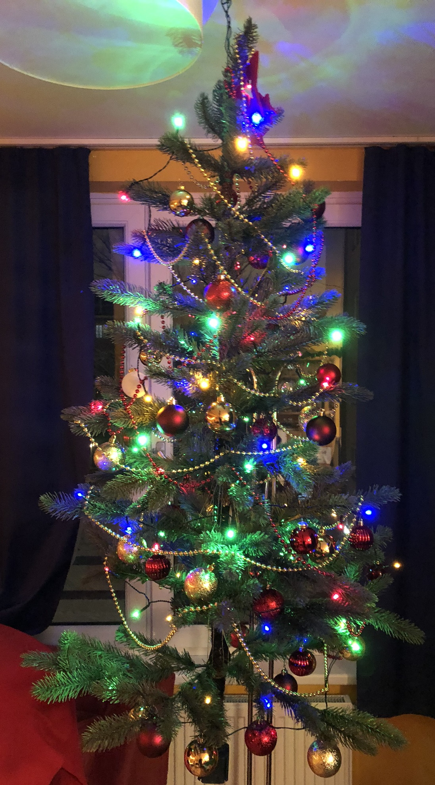

Weihnachten ist das schönste Fest des Jahres. Wir suchen die Geselligkeit, wärmen uns an einander und feiern, dass das Licht wieder in die Welt zurückkehrt. Dieses Fest ist viel älter als die Geburt Christi. Wir lassen es am 19. Dezember richtig krachen und feiern Weihnachten wie Wikinger. Melde dich jetzt an!
Der anstehende Jahreswechsel ist eine symbolhafte Zeit. Es ist die Zeit, in der du dir neue Ziele setzt. Es ist die Zeit, in der du deine Liebsten um dich versammelst. Es ist die Zeit, in der du innehältst, um dann mit neuer Energie dein Licht wie ein loderndes Feuer in die Welt zu bringen.
Die Sonne steht in vielen Kulturen für das Göttliche, das Übersinnliche. Im Herbst und Winter sehen wir die Sonne immer weniger. Das Göttliche verschwindet aus unserem Leben und hinterlässt eine gähnende Leere. Es herrscht ein dunkler, ewig dauernder Winter.
Genau da bringen wir wieder Licht hinein! Wir bringen das Licht, die Sinnhaftigkeit wieder in unser Leben. Wir nehmen unser Leben selbst in die Hand, legen unsere Marschrichtung fest und lassen die Energie hochkochen! Gemeinen entzünden wir ein Feuer in unseren Herzen, das die Dunkelheit aus jeder Ecke vertreibt!
Mit nordischen Geschichten, mit einer Erzählrunde über deine Bedeutung dieser Jahreszeit, mit Zweiergesprächen, mit Tanzen, mit Stille bereiten wir uns auf die Zeit zwischen den Jahren vor. Wir blicken zurück auf das vergangene Jahr und blicken voraus auf das kommende Jahr. Wir stoßen Altes und Belastendes ab und wir wenden uns Neuem zu. Gemeinsam gehen wir durch die Finsternis und finden die flammende Energie des Neuanfangs. So sind wir bereit, 2021 voller Energie anzugehen.
Die Plätze sind beschränkt, also melde dich gleich an auf office@white-wolf-rituals.com.

Das Event findet am Samstag 19. Dezember 2020, um 18h00 statt. Die genaue Location (in Wien oder Online) wird bekanntgeben.
Melde dich jetzt per E-Mail an: office@white-wolf-rituals.com
Die Teilnahme erfolgt auf eigene Gefahr. Es werden Fotos und Videos gemacht, die für Werbezwecke veröfftentlich werden können. Mit deiner Teilnahme stimmst du dem zu.
Photo credit: Dirk Rombauts